문서 특화 AI 에이전트 제피
AI 답변과 원문 근거를 연결해 검증을 응답 안에서 끝내도록 했습니다.
검증 포기율 73% 해소 GS인증 1등급으로 공공조달 요건을 충족했습니다.
문제 정의부터 검증까지 과정이 남아 있는 작업입니다.
공공 문서 AI, 음성 접근성, 디자인 시스템을 다뤘습니다.
AI 답변과 원문 근거를 연결해 검증을 응답 안에서 끝내도록 했습니다.
검증 포기율 73% 해소 GS인증 1등급으로 공공조달 요건을 충족했습니다.
고령자와 외국인이 화면을 읽지 않고 말로 주문하고 결제합니다.
영남 방언과 고령자 발화를 반영하고 리빙랩 사용성 테스트로 검증했습니다.
Base에서 Semantic으로 이어지는 2-tier 컬러 토큰과 Variables 라이브러리를 세웠습니다.
design.md 단일 명세로 디자인과 개발이 같은 문서를 참조합니다.
여러 사람이 함께 가는 라운드의 조율과 정산이 늘 앱 밖에서 일어나는 문제를 다뤘습니다.
모든 선택을 인당 총액이라는 하나의 축으로 환산하고 1/N·혼합 결제까지 안으로 넣었습니다.
저는 화면을 그리기 전에 데이터로 사용자 플로우의 단절 지점을 찾고 UX가 사용자의 신뢰를 얻고 있는지 확인합니다.
또한 다양한 도메인에서 문제의 원인을 구조화하고 사용자 경험으로 해결해왔습니다.
2021년부터 2026년의 공공기관 웹 서비스의 정보 구조 재설계, 리뉴얼, 제안서 시안
마케팅팀과 협업을 통한 랜딩페이지의 아카이빙 입니다.
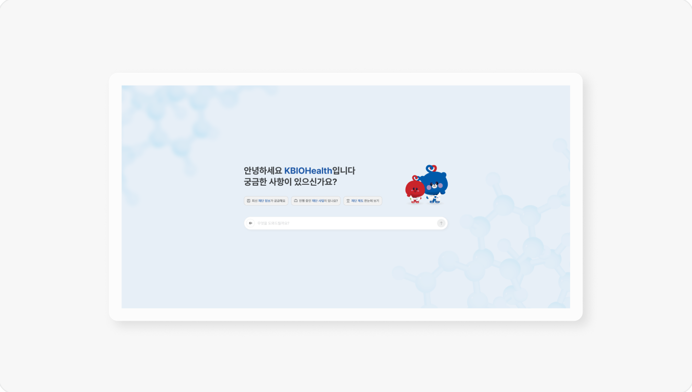
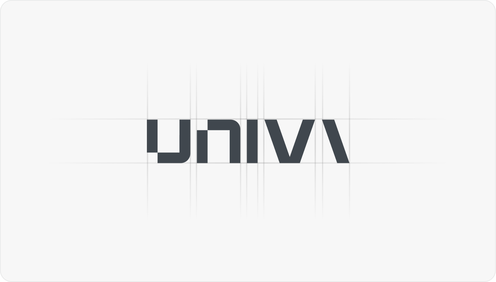
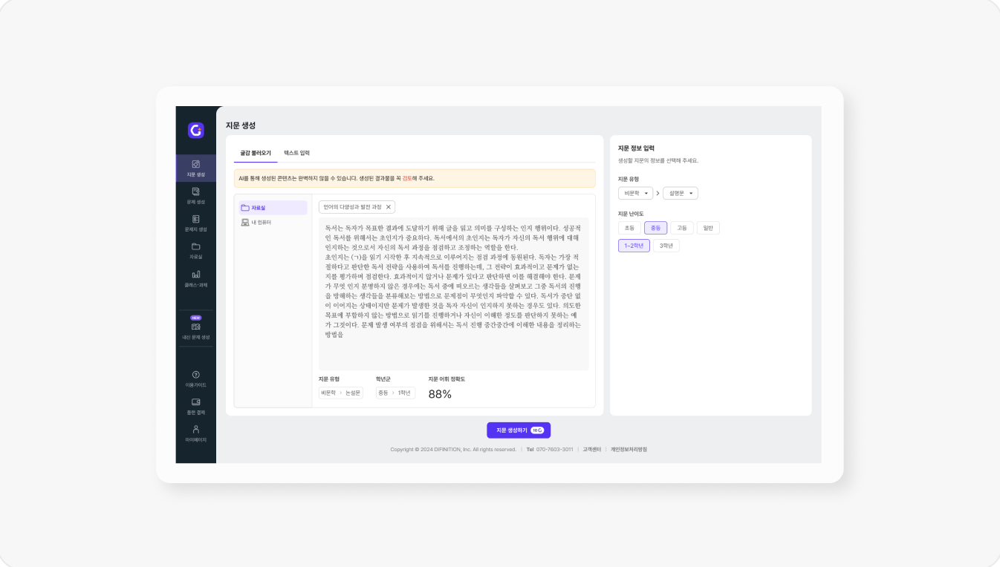
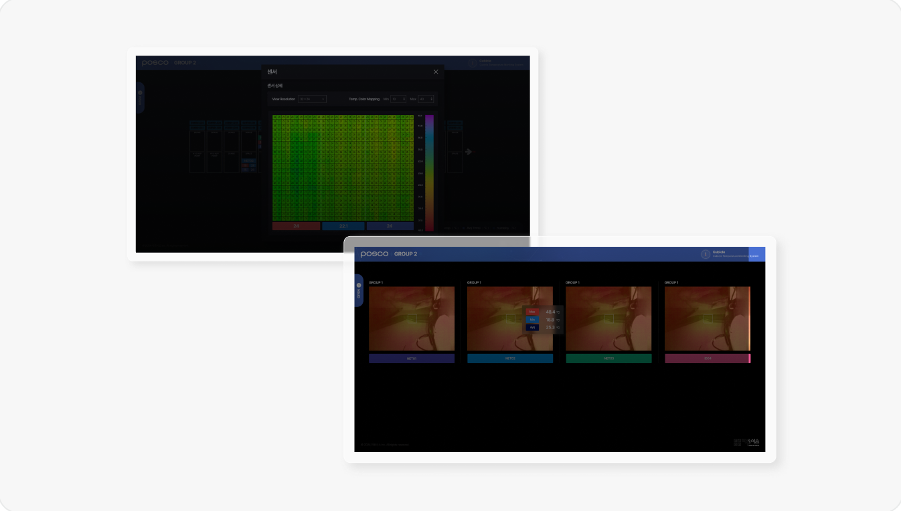
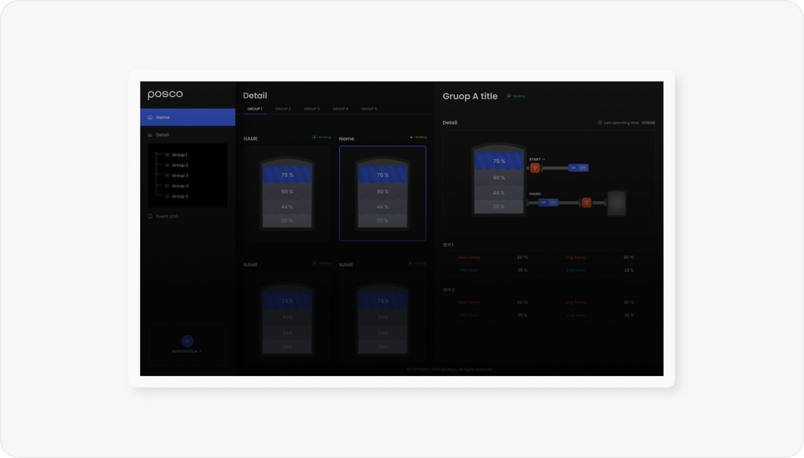
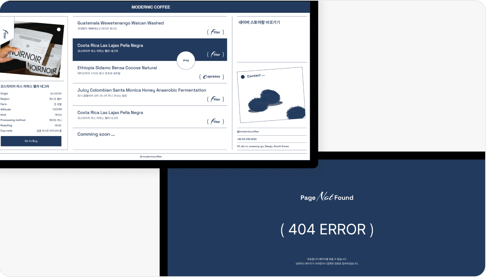
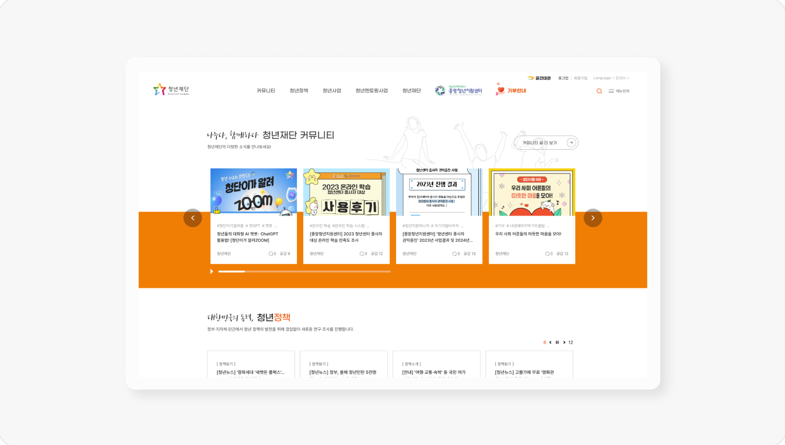
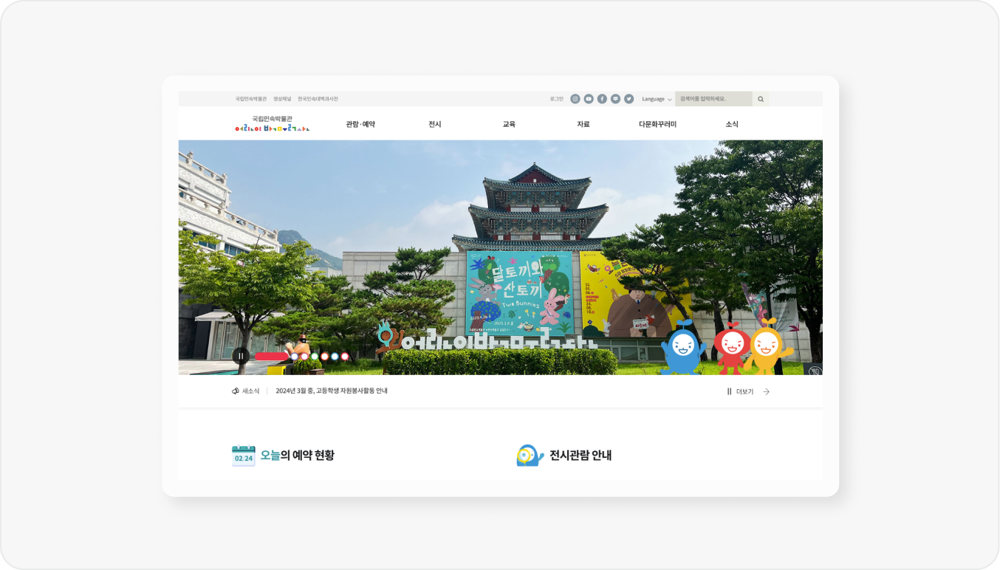
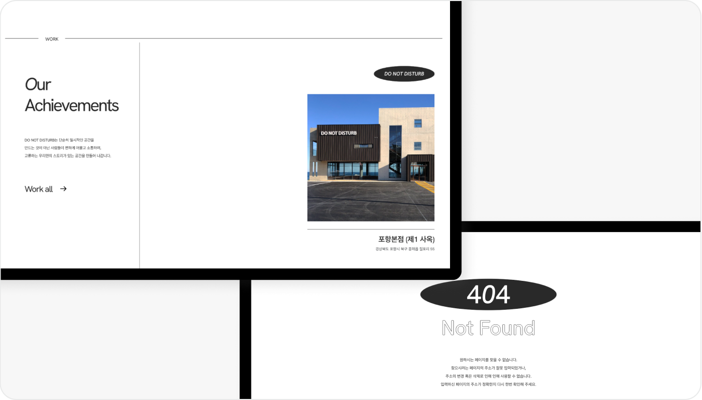
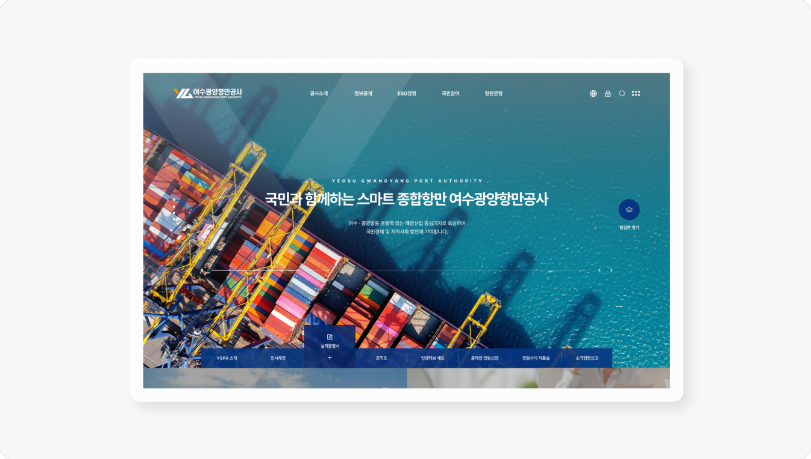
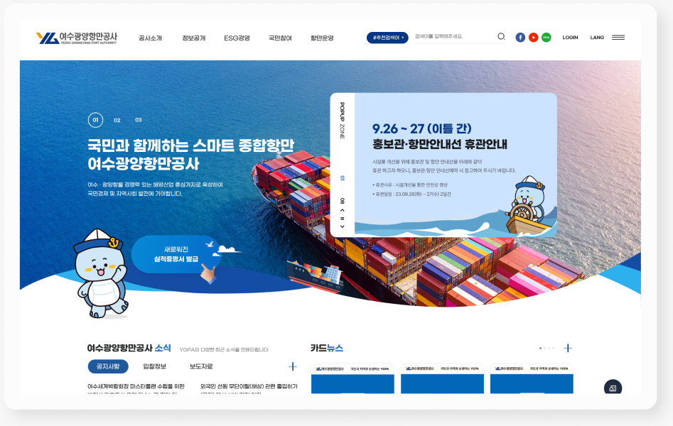
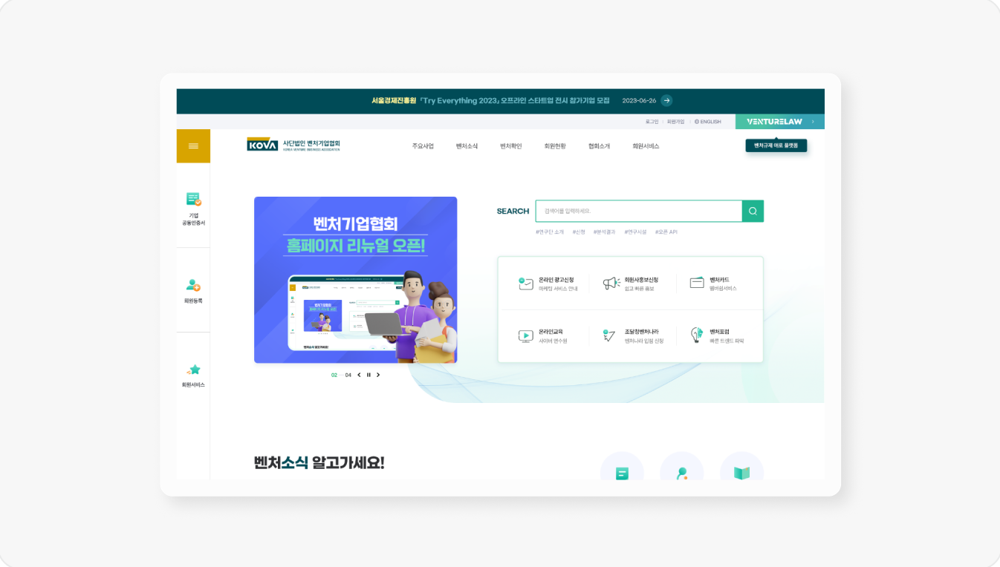
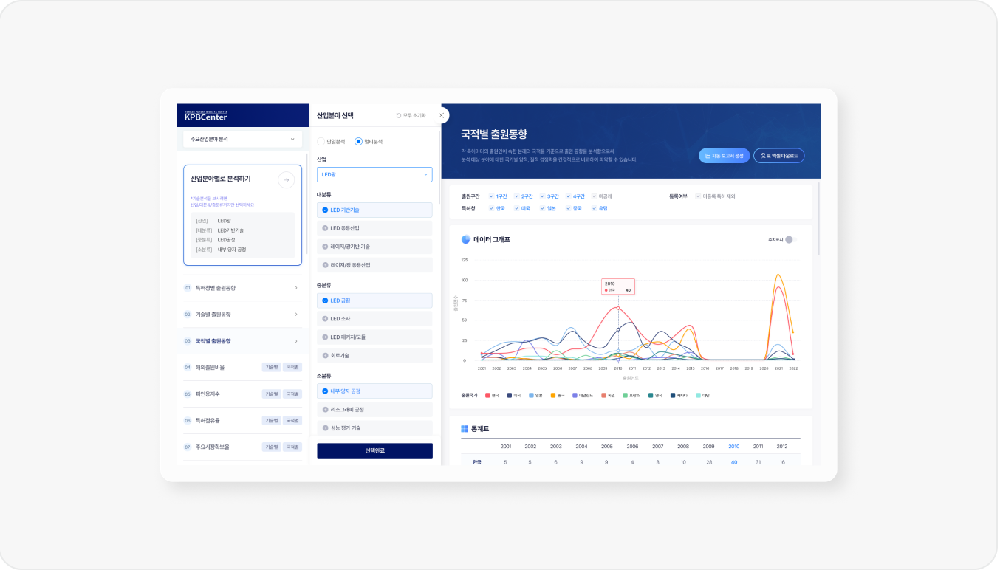
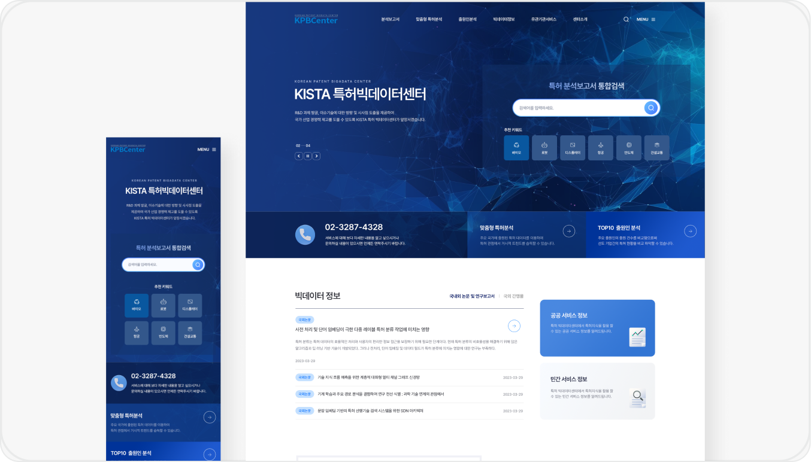
2021년부터 2026년까지의 작업 썸네일 14건. 전체 목록은 Archive 페이지에서 확인할 수 있습니다.